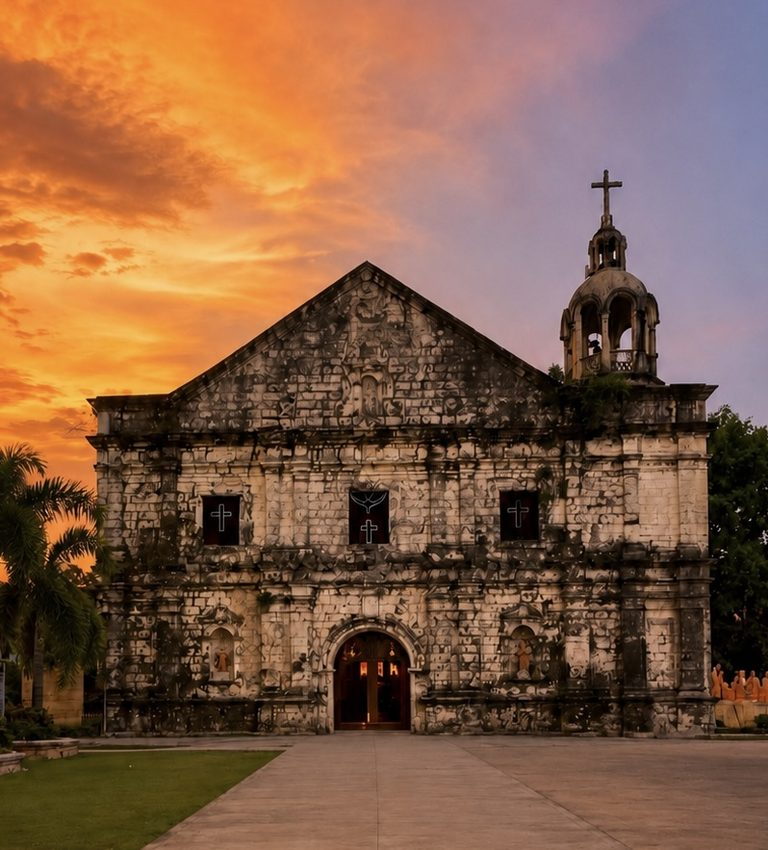

History and culture
Masinloc's History Has More Than One Starting Date
1572 is everywhere. 1607 is better documented. Neither is a founding certificate, and people were living here before both.

Search for the founding date of Masinloc and you will get 1572, quickly and from many places. It is on websites, in captions, in presentations and in speeches, and it has been repeated often enough to sound settled. It is not settled, and the reason is worth understanding because the same pattern affects the founding dates of a great many Philippine towns.
The year 1572 belongs to the wider story of Spanish exploration along the Zambales coast under Juan de Salcedo. That is genuine historical context and it usefully places this coastline within the early movement of Spanish expeditions through Luzon. What it is not is a record of the establishment of a town called Masinloc. An expedition passing along a coast is not a founding.
The date that holds more weight
The stronger documented beginning of Masinloc as a mission town is 1607, the year Recollect historical literature places Fray Andres del Espiritu Santo and Fray Jeronimo de Cristo in Masinloc, with Andres treated as founder of the mission town and builder of its first church. It is also the date used in current DILG Zambales historical material. That gives a sequence rather than a certificate: people living here long before either year, 1572 as exploration context, 1607 as the anchor for the mission and the first church.
We are not making Masinloc younger. We are making its history more precise.
There is a second problem with founding dates, and it is the more serious one. Treating either 1572 or 1607 as the beginning of Masinloc makes colonial attention look like the birth of the community. It quietly says the town began when outsiders started writing about it. The Sambal communities on this coast did not begin in the seventeenth century; they began being written down in the seventeenth century, which is an entirely different claim.
The line worth teaching
For classroom use the safest formulation is short: 1572 is Spanish exploration context for Zambales, not the proven founding of Masinloc; the 1607 Recollect mission is the stronger documented town and church anchor; and native life came before both. That sentence will never fit on a commemorative seal. It is still the better history.
Sources & further reading
- Masinloc, Zambales: Augustinian Recollect Mission (1607–1902)Emmanuel Luis A. Romanillos
- History of Zambales and its earliest mission townsDepartment of the Interior and Local Government — Zambales